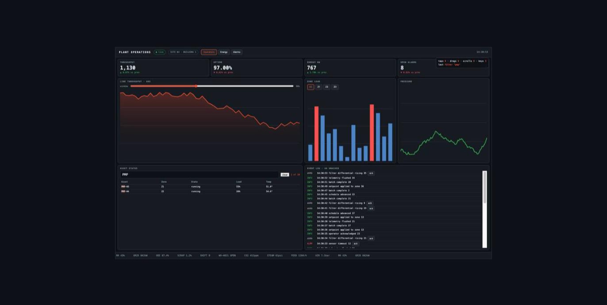
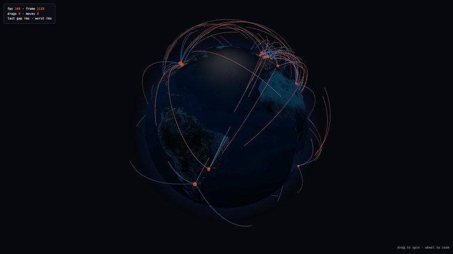
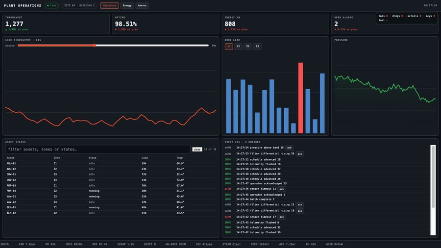
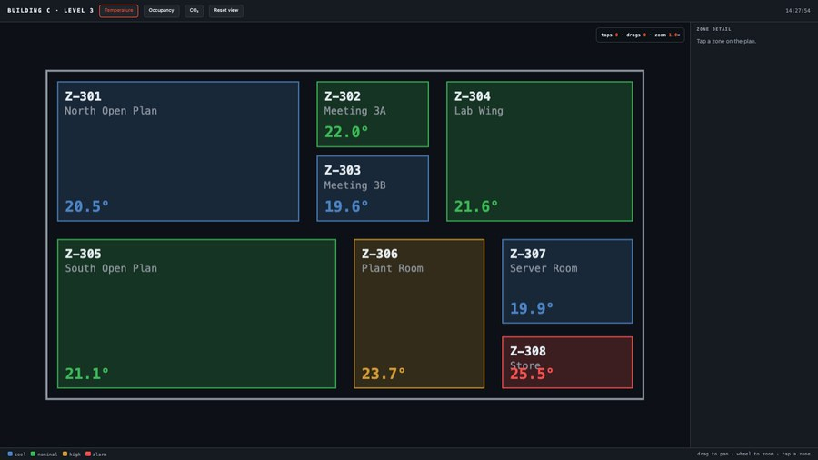
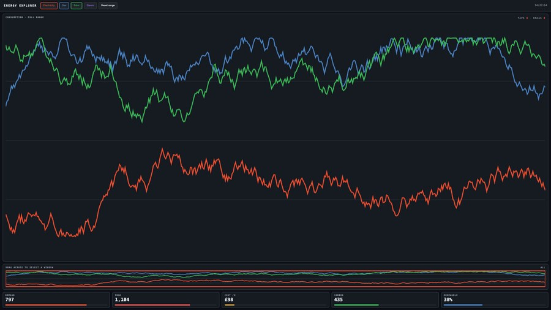

A member of staff can now pick any single panel on the video wall, see it live on a tablet at a comfortable size, and touch it — tap, drag, scroll and type — without going near the wall itself.
The wall shows several dashboards at once, several metres wide and mounted out of reach. Until now, doing anything to one of them — signing in, dismissing a message, changing a filter, scrolling to the part that matters — meant going to the machine behind the wall with a keyboard, or opening a remote desktop session. Neither is something to do in front of visitors.
This puts the same control on a tablet on the venue's own network. The operator chooses a panel, it appears on the tablet at tablet size, and touching it reaches the real page.

It is not a mirror of the wall.
Only the one panel being watched is sent, captured separately and shrunk before it leaves the machine. The wall's own picture is never touched, and nothing about what visitors see changes while somebody is working on a tablet.
The obvious worry is that watching a panel makes the wall itself stutter, since both are drawing on the same graphics hardware. We measured it against the most demanding content we could build — a 3D globe with animated flight paths, and a dashboard with live charts, a scrolling log and a ticker all moving at once.
| Panel content | Wall's own smoothness | Tablet picture |
|---|---|---|
| 3D globe | no measurable change | 30 frames a second |
| Building floor plan | no measurable change | 30 frames a second |
| Energy charts | no measurable change | 12 frames a second |
| Busy operations dashboard | no measurable change | 10 frames a second |
The wall held its full frame rate in every case. The limit is the tablet's own picture, not the wall's. Dense, detailed content sends more data than a large simple image does, so the chart-heavy dashboards look less smooth on the tablet than the globe — smooth enough to work with, not smooth enough to present from.
The wall's existing test pages each prove one narrow behaviour and none of them moves or responds. Four demonstration panels were built that behave like the exhibit does, and they are what the figures above were measured against.




Working and tested
Needed before a client sees it
Recommendation: keep it in-house for now.
As it stands the feature is only reachable from the wall machine itself, which makes it a useful tool for our own staff during installation and commissioning at no risk. Putting it on the venue network is a separate, small piece of work — adding a password and encrypting the connection — and worth doing deliberately rather than as part of this.